📝 Шаг 7. Контент сайта
Редактирование заголовков, услуг, отзывов, FAQ и часов работы — без правки кода.
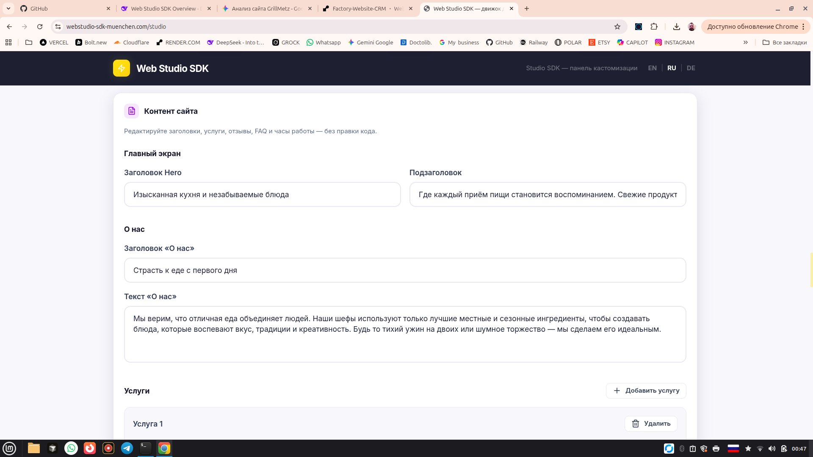
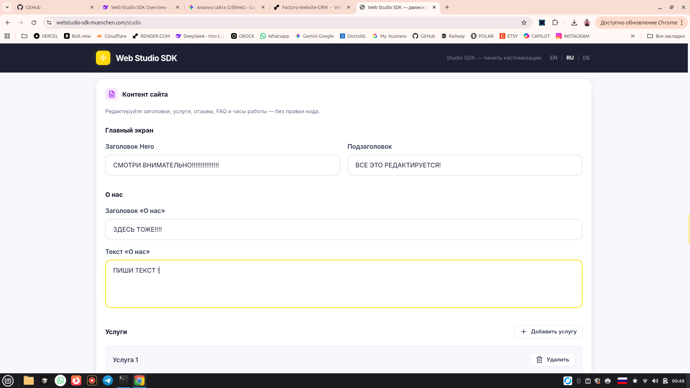
Полный обзор движка генерации сайтов для веб-студий
Web Studio SDK — это инженерная платформа, которая превращает рутинную вёрстку в конвейер. Вместо недель разработки — минуты настройки. Вместо жёстких шаблонов — гибкая система с CRM, онлайн-записью, Google-отзывами и мультиязычностью.
Первое, что видит студия при входе в SDK — сетка ниш. Каждая ниша уже имеет оптимизированную структуру и копирайтинг.
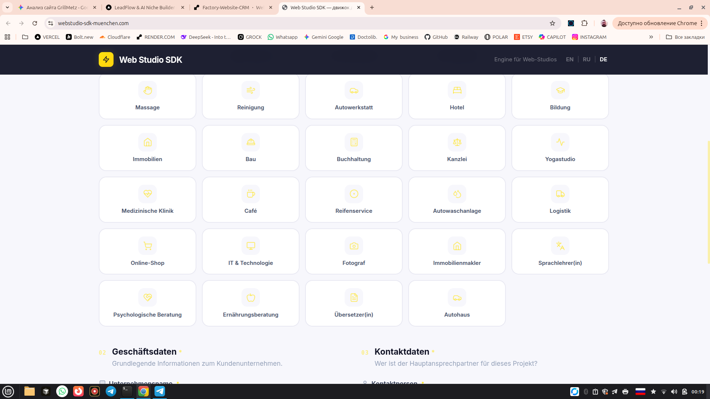
Поддерживаемые направления: Restaurant, Zahnarztpraxis, Schönheitssalon, Fitnessstudio, Barbier, Massage, Reinigung, Autowerkstatt, Hotel, Bildung, Immobilien, Bau, Buchhaltung, Kanzlei, Yogastudio, Medizinische Klinik, Café, Reifenservice, Autowaschanlage, Logistik.
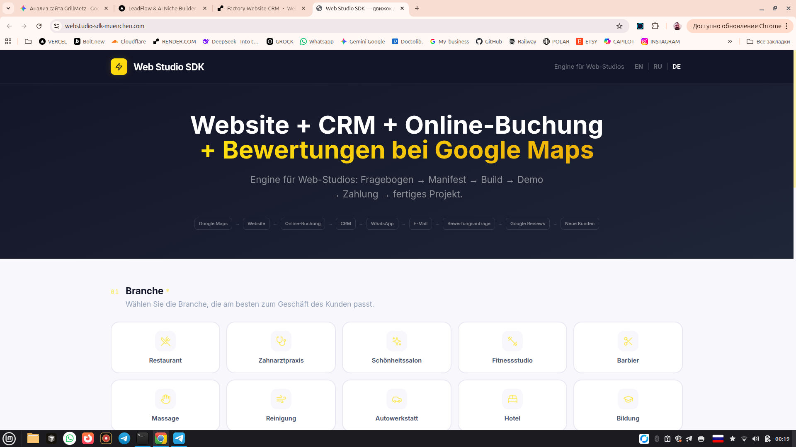
В разделе «Настройки студии» заполняются данные агентства и выбирается режим владения проектом.
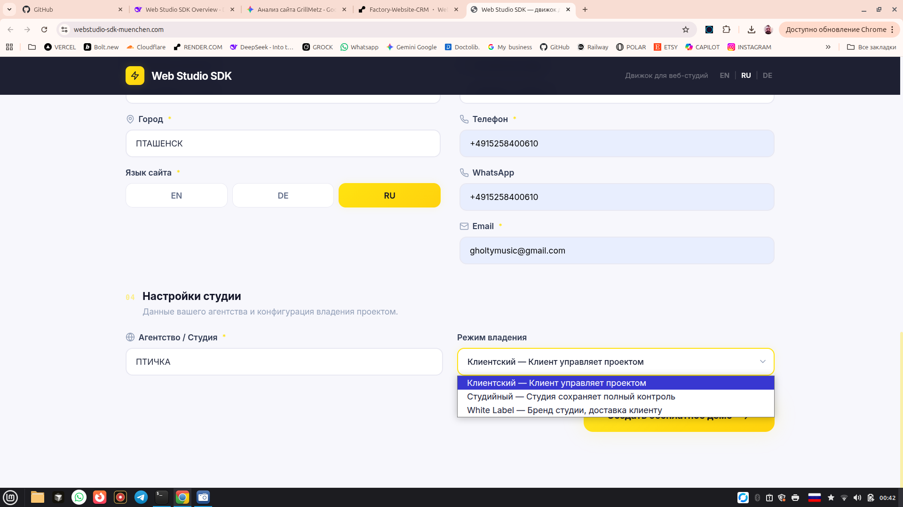
Режимы владения:
Заполняются основные данные компании.

Здесь настраивается визуальный стиль сайта.
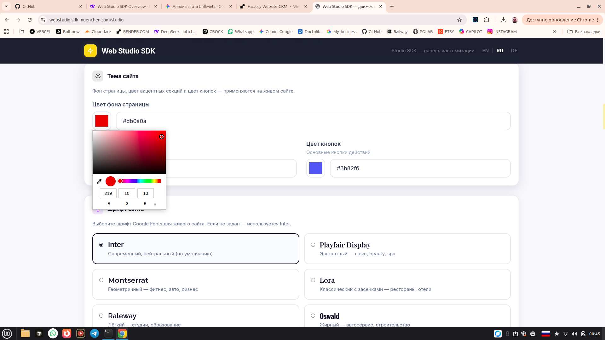
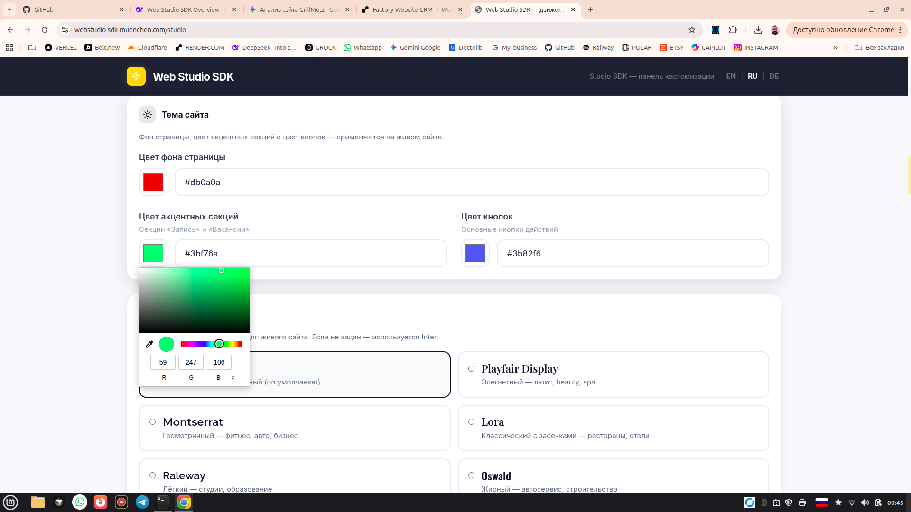
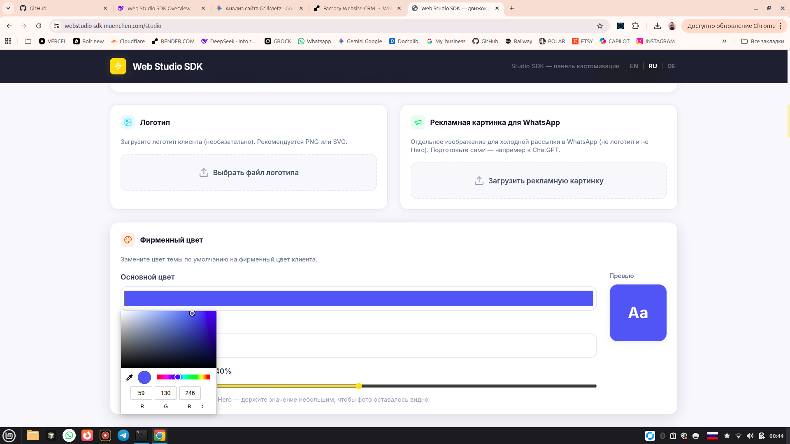
Включение и выключение блоков сайта.
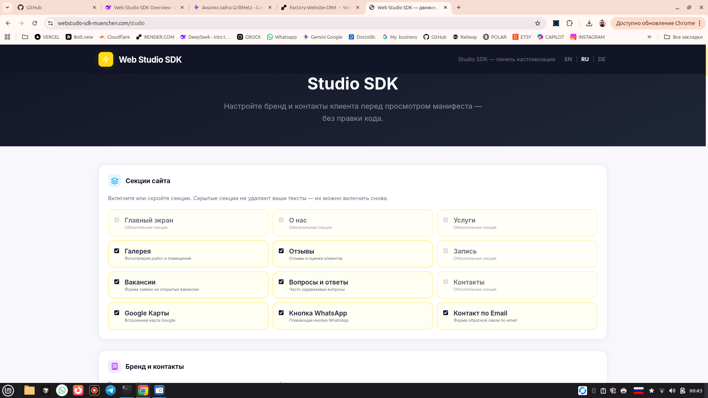
Обязательные: Главный экран, О нас, Услуги, Запись, Контакты.
Опциональные: Галерея, Отзывы, Вакансии, FAQ, Google Карты, WhatsApp, Контакт по Email.
Редактирование заголовков, услуг, отзывов, FAQ и часов работы — без правки кода.


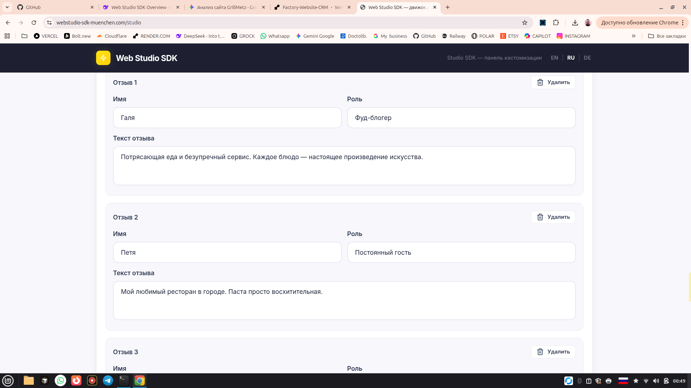
Поля: Имя, Роль, Текст отзыва.
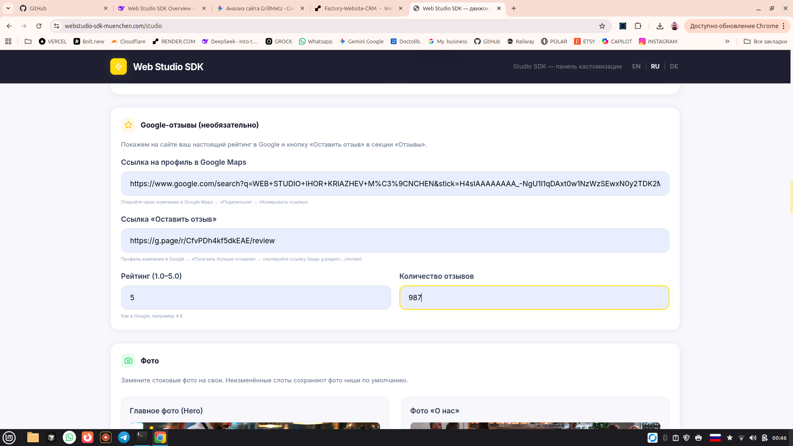
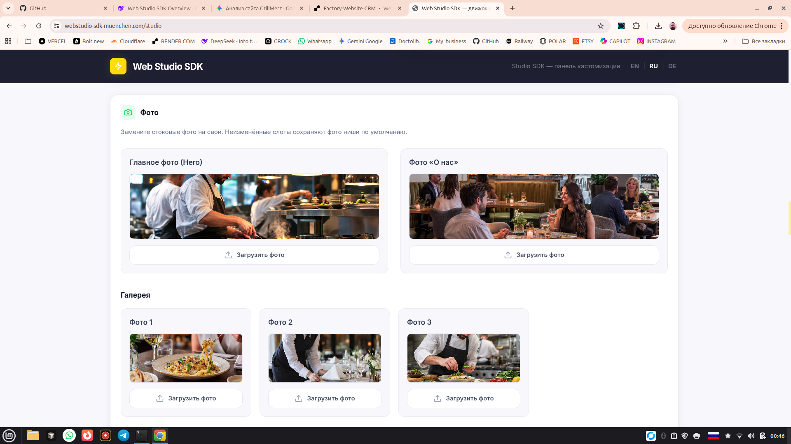
Слоты: Главное фото (Hero), Фото «О нас», Галерея (3), Фото услуг (3).
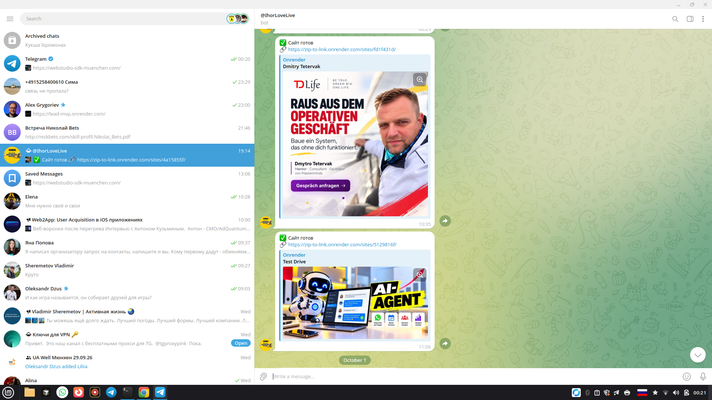
После настройки SDK генерирует статический сайт с адаптивным лендингом, формой онлайн-записи, FAQ, отзывами, вакансиями и контактами.
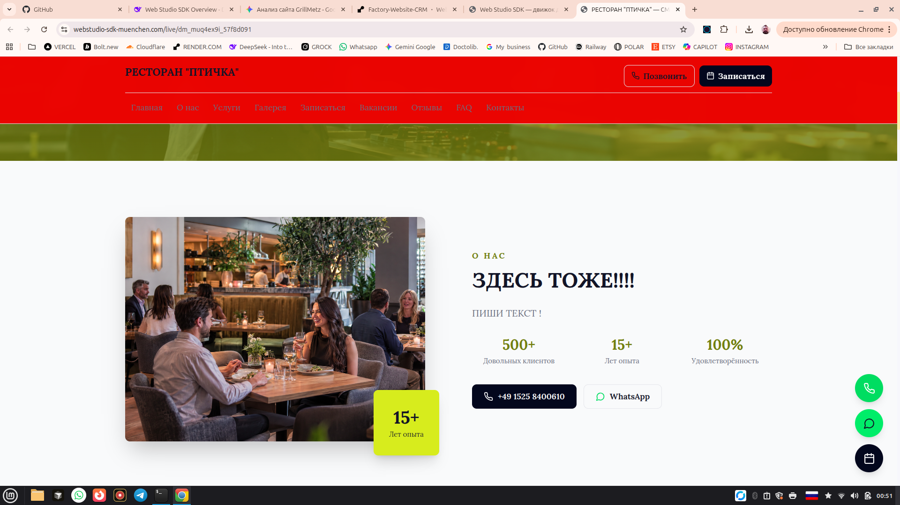
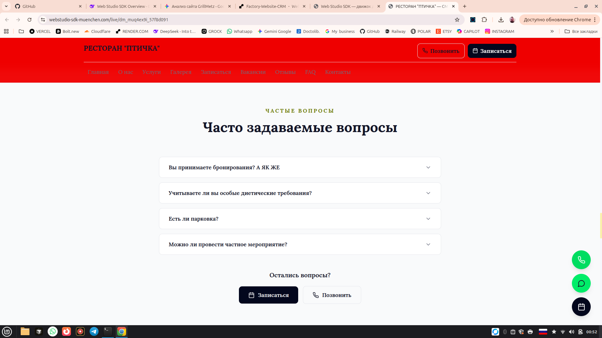
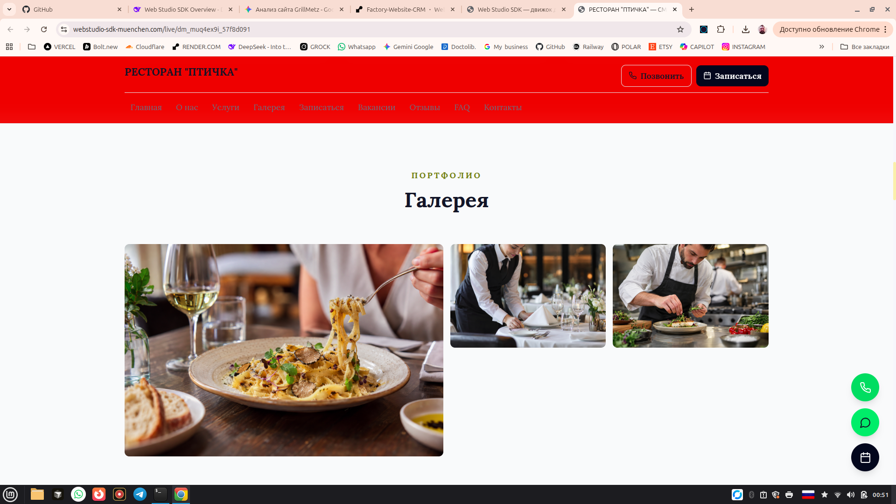
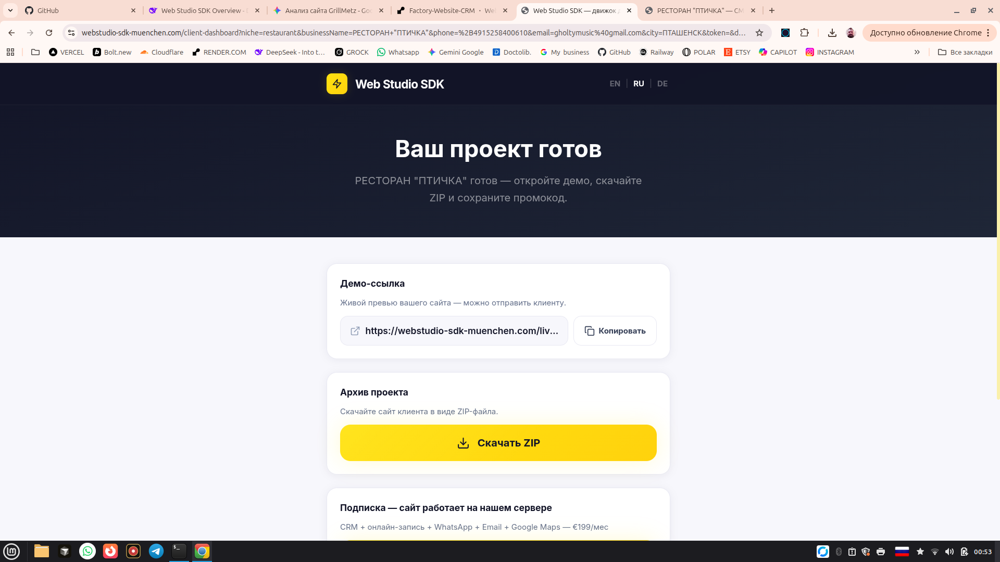
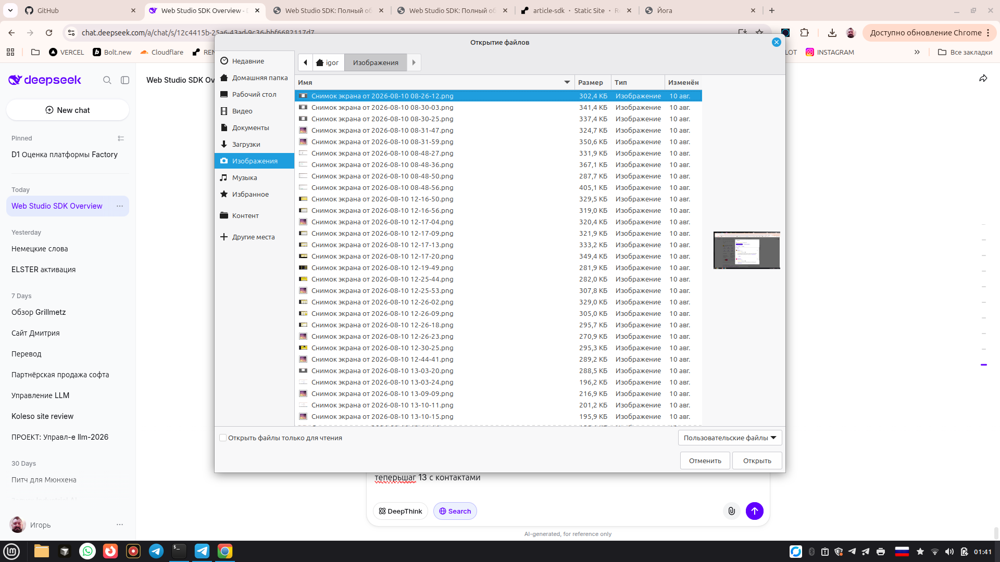
git init
git add .
git commit -m "feat: release article-sdk"
git branch -M main
git remote add origin https://github.com/your-username/article-sdk.git
git push -u origin mainЗатем на Render создаётся Static Site, подключается репозиторий — и сайт готов.